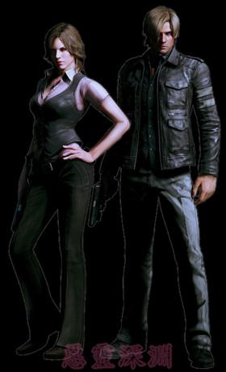
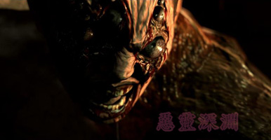
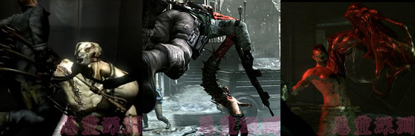

|
|
|
惡靈古堡６ |
|
 2013 年… 距離 Raccoon City 的病毒爆發事件已經將近 15 年 美國政府隱瞞 Raccoon City 的真相也將近 15 年 在美國情報局擔任幹員的 Leon S. Kennedy ，同時也是總統朋友 他與總統達成共識，決定將一切公諸於世 演講當日，會場爆發大規模的生化事件 Leon 的眼前又再次出現類似 Raccoon City 事件中受Ｔ病毒感染的僵屍 他沒有選擇，只能舉槍結束對方的生命 那個人，正是當時的美國總統 Leon 因此被冠上刺殺總統的罪名而被追緝 他與夥伴 Helena Harper 將一同證明自己的清白 Helena：會發生這一切都是我的錯…… 夥伴意義不明的發言，背後究竟隱藏著什麼真相？ 另一方面，投身 BSAA 的前 S.T.A.R.S.成員──Chris Redfield 跟隨小隊來到中國蘭祥進行任務 在那裡出現的謎之傭兵，以及金髮女子，跟事件的關連是…？ |
|
|
|
對應主機：PS3（2012-10-4）╱Xbox360（2012-10-4）╱PC（2013-3-22） 執行製作人：小林裕幸╱製作人：佐佐木榮一郎╱導演：平林良章 |
故事背景 時間背景發生在 2013 年，距離 Raccoon City 事件 15 年後。 分成 Leon、Chris 與 Jake 三條主線進行。Leon 的舞台在美國，Chris 的舞台在中國一個遊戲虛構的城市「蘭祥（LanShiang）」，Jake 的舞台 則在東歐。 Leon 線── 2004 年，Leon 曾接下尋找總統 Graham 女兒的任務；2013 年，Leon 是美國繼任總統 Adam Benford 的護衛。在與總統長時間相處下，兩人 除了工作上的關係， 私下也是朋友。也許是在 Leon 的影響下，總統終於決定公佈政府隱藏已久的 1998 年 Raccoon City 病毒爆發真相。 就在公開演講會的當天，會場爆發大規模的生化病毒事件，總統不幸也遭受感染，受感染後的模樣與行動，與 Leon 15 年前所接觸的 Ｔ病毒竟有些相似？！面對已經失去人性的總統，Leon 唯一的選擇也只有開槍結束他的生命，沒想到這麼一來，卻讓他背負「刺殺總統 」的罪名而被政府追緝。為了證明自己的清白，Leon 與工作夥伴 Helena Harper 只好先逃亡。 Leon 來到名為「Tall Oaks」的城鎮，這裡已被病毒大規模侵襲，從 Ingrid Hunnigan 那裡得知，這個城鎮有九成的居民都被病毒感染，人數 高達 7 萬人，彷彿是 Raccoon City 再現。 逃亡的過程中，Helena 卻對 Leon 說這一切的事情都是她造成的，在事件的背後，有些 Leon 不知道的秘密… Ada 線── 在謎之地下墓地中，Ada 與 Leon 再次相會，Ada 舉起武器對著 Leon 和 Helena，Helena 也毫不客氣的舉槍對準 Ada。 Ada 手中通信機的聯絡對象究竟是？而她所說的「Neo-Umbrella」真相又是甚麼？ Chris 線── Chris 跟著 BSAA 前往中國蘭祥執行任務，當地所發生的生化事件情況，根本不是任務人員足以應付的，但是總部依舊要求他們完成任務 並找到被囚禁的國際聯盟高官「黑桃Ａ」。 Jack 線── 在生化威脅的東歐地區「Edonia 共和國」，傭兵 Jake 加入反政府軍作戰。在戰爭中，喝下反政府軍配發的營養劑的傭兵們，身體似乎都 出現了異常的變化，外型與力量都有異於常人的改變。而不知道為什麼，這些變化並沒有發生在 Jake 身上。 在戰爭中，突然出現在他眼前、自稱是美國特務 Sherry Birkin 的女性，要求他一起拯救世界。 「前金是 20 萬美元，事情結束後還有後謝，對了，B.O.W. 費用另計，打倒一隻的報酬是 1000 美元。」 Jake 被這些話所打動，只是在 BSAA、產生變異的反政府軍的激烈戰場中，危險無所不在，誰也無法保證這齣逃亡劇的結局。
組織介紹 DSO Division of Security Operations（保安作戰機關），美國為因應層出不窮的生化恐怖威脅所設立的機關，能更即時性、 更有彈性的下達命令與執行任務。 於 2011 年由總統 Adam Benford 指示設立，從各個機構選拔精英人才，並且直屬於總統管轄，由總統直接下達任務與命令。設立兩年以 來，DSO 出現了「總統之劍」的別稱。 說到 DSO 的代表人物，就是設立當時即加入的成員 Leon S. Kennedy。在總統府輔佐官 Simmons 指示下，另一名成員 Sherry Birkin 前往東 歐保護 Jake Muller，Leon 才得知 Sherry 與他同屬一個機關的事情。 而另一個組織 FBC（ Federal Bioterrorism Commission，聯邦恐怖行動對策委員會）雖然也是以對付生化威脅為目的，但與 DSO 沒有任何 直接關係，組織的風格也相當迥異。
BSAA Bioterrorism Security Assessment Alliance（生化恐怖防治部隊）。2003 年 Umbrella 崩壞後，B.O.W.（生化武器）開始流入世界 的黑市交易，從黑市流向國家、游擊隊、恐怖組織手中，迫使大家開始關注生化武器的問題。 為了因應這種狀況，2004 年製藥企業聯盟以民間 NGO（非營利組織）的名義設立 BSAA，2005 年，Queen Zenobia 事件（Revelations 故事 劇情）後組織重編，成為國際聯合直屬的特殊部隊。在全世界共有八個分部。 後來有報告指出在東歐 Edonia 共和國出現新品種生化武器，而招集身為 BSAA「Original 11」的 Chris，率領北美分部的隊員共同參與作戰 。接著的蘭祥作戰，則因應生化災害擴散範圍過大，除了責任所屬的極東分部外，也會調派其他分部成員前往支援。
Edonia 反政府軍 80 年代後期，東歐各國開始跟進民主化的腳步，其中的 Edonia 共和國，在歷經 20 年的民主化過程後，漸漸出現內政問題， 國家內部體制開始混亂，而趁著混亂之際，部分軍人發起政變，占據 Edonia 的市政廳，當時早已失去秩序的政府根本無力 處理，失去了國民的支持，首相宣布解散議會。後來強調與歐洲諸國強化友好關係的政黨成為國內第一大黨，Edonia 的內政才慢慢地恢 復秩序，當初發起政變的勢力逐漸衰敗，但其中一部份極左派成為了反政府軍依然頑強抵抗。 這樣的狀況並沒有維持很久，由於周遭鄰國的政情也不穩定，反政府軍便趁勢搭著鄰國的混亂再起。除了反政府軍外，一部份的貧民 加上作亂的暴徒，2010 年，Edonia 共和國陷入內戰的窘境。 讓內戰更加混亂的，是生化兵器的加入，反政府軍散佈「Ｃ病毒」生化兵器，名為「J'avo」，繼而促使 BSAA 參戰，內戰又進一步更加 惡化。
遊戲特色 •歷代中製作人數最高，全球超過 600 人 •可邊移動邊射擊 •經過四代、五代的疫生獸敵人後，重返病毒生物，僵屍再現 •故事舞台首次登陸亞洲 •加強臨場感、故事性、壓倒性的恐怖感 全新生物 
官方公佈的全新生物之一，「J'avo」，這個名字是 BSAA 根據塞爾 維亞語給予的稱號，意同「惡魔」。最早出現在世人眼前，是此次 事件的 6 個月前，東歐的生化事件中。 此種生物的估計是由人類異化而成，可以理解人類的語言、懂得團 體行動、而且還會使用武器，最糟糕的是牠們有自行修復身體機能 的能力，也有可能在在生的過程中使身體形狀產生變異。
 僵屍再臨 過去在系列作中出現的僵屍，在新作將要再次出動！此次的僵屍被證實與新病毒「Ｃ-Virus」有關，當然比起以往，也更加的聰明且更有 行動力，除了能走、能跑、能跳，還有使用武器的能力，相對也就更加難纏與棘手了。 Ｃ病毒 在東歐戰爭區域「Edonia 共和國」所發現的新種病毒。據說在配給反政府軍士兵的營養劑中，有混入此種病毒。 本作中的新敵人「J'avo」以及僵屍，看來都跟這個病毒有所關聯。 某些Ｃ病毒的感染者，在後期會變身成「蛹」，如同昆蟲一般，暫時停止了行動，在蛹中靜待變異，當他們破蛹而出時，就是以「完全 體」的姿態現身了。 |
惡靈深淵Biohazard Abyss http://www.bio.twmail.net